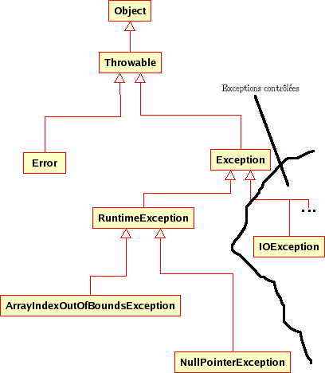

Présentation

Le mécanisme des exceptions fait écho au concept de design by contrat de Bertrand Meyer.
La programmation par contrat (en anglais, design by contract ou DBC) est un paradigme de programmation dans lequel le déroulement des traitements est régi par des règles. Ces règles, appelées des assertions, forment un contrat qui précise les responsabilités entre le client et le fournisseur d’un morceau de code logiciel. C’est une méthode de programmation semi-formelle dont le but principal est de réduire le nombre de bugs dans les programmes. (https://fr.wikipedia.org/wiki/Programmation_par_contrat)
Introdution
Une exception est la manifestation d’un bogue, le signe qu’une opération s’est interrompue anormalement.
Principe de programmation
|
Pas de retour pour les bogues Une opération qui ne peut pas réaliser sa fonction ne doit pas retourner à l’appelant. |
Ce principe est à rapprocher que le qualité première d’une fonction : la correction. Une fonction (au sens large) ne pouvant pas réaliser le travail pour laquelle elle s’est engagée, doit déclarer forfait.
Les langages d’aujourd’hui fournissent un moyen d’adhérer à ce princpe, en fournissant un canal de retour dédié aux exceptions. L’erreur est alors canalisée, puis traitée avec plus ou moins de bonheur.
Règles de programmation
Exemple
Nous souhaitons, dans un formulaire en cours d’exécution, pouvoir changer l’image du produit courant. Pour cela nous créons une méthode qui reçoit le nom d’une image (un nom de fichier) et qui place celle-ci dans un label.
class Formulaire extends JFrame {
private
JLabel lbnomProduit;
public void changeImage(String nomFicImage){
ImageIcon icon = null;
java.net.URL iconURL = ClassLoader.getSystemResource(nomFicImage);
icon = new ImageIcon(iconURL);
lbnomProduit.setIcon(icon);
}
. . .
}Isolons une instruction :
Notre méthode changeImage a un objectif bien précis : placer une image dans un label. Pour réaliser cette tâche, elle délègue à un objet de la classe ImageIcon le soin de charger l’image en mémoire.
A cet instant précis, la méthode changeImage agit en tant que client (l'appelant) et l’objet de type ImageIcon en tant que fournisseur de service (l'appelé). Situation rien de plus banale.
Comme dans toute relation client-fournisseur, il existe un contrat entre les parties. Dans une telle relation, chacune des parties assume ses obligations et peut faire valoir ses droits.
Notion de contrat
Revenons sur l’analogie client-fournisseur. Un contrat lie client et fournisseur.
Exemples de contrat : Si vous commandez ce produit avant 18h, nous vous garantissons une livraison chez vous le lendemain
Bien sur, les contrats peuvent être bien plus complexes : contrat de travail, contrat de mariage, contrat de construction d’une maison etc.
|
Définition d’un contrat
Le principe de conception par contrat est dérivé de la notion légale de contrat : chacune des parties qui respecte ses obligations est en droit de faire valoir ses droits. En terme de programmation, un objet est responsable de l’exécution des services dont il a la charge (ses obligations) si et seulement si certaines conditions sont remplies (ses droits). |
Les obligations et droits sont représentés en UML par des pré et post conditions.
Les définitions suivantes, sont extraites du livre "Conception et programation orientées objet" de Bertrand Meyer (p. 335).
-
La précondition s’impose au client. Elle défine les conditions selon lesquelles un appel de méthode est légitime. C’est une obligation pour le client et un droit pour le fournisseur.
-
La postcondition définit les conditions qui doivent être vérifiées par la méthode au retour de son appel. C’est un droit pour le client et une obligation pour le fournisseur.
Contrairement à ce qui se pratique parfois, le fournisseur définit seul les termes du contrat, pas de négociation possible !
Obligations |
Droits |
|
Client |
(pré-condition) Doit fournir un chemin valide correspondant à un fichier image correct |
S’attend à obtenir une référence valide à un objet ImageIcon |
Fournisseur |
(post-condition) S’engage à retourner une référence à une instance de |
S’attend à recevoir un chemin exploitable vers un fichier image. |
Quand le contrat est rompu
Un contrat rompu est synonyme de bogue : l’une des deux parties n’a pas été en mesure de respecter son contrat.
Dans le but de répondre à cette problématique, certains langages de programmation proposent un mécanisme de gestion des contrats.
Toute fois, il arrive que les spécifications des contrats (pré et post conditions) ne soient présentes que sous la forme de commentaires dans la documentation (documentation de l’API).
Les langages modernes proposent au minimum un mécanisme appelé gestion des exceptions.
|
Exception
Événement déclenché par une opération qui s’est trouvée dans l’impossibilité de réaliser son contrat. |
Comment ça marche ?
Lorsqu’une exception est déclenchée, un saut brutal arrière est effectué vers le premier gestionnaire try/catch intéressé par l’exception, en remontant la chaîne des appels.
Ainsi si aucun gestionnaire try/catch ne filtre l’exception en train de remonter, elle atteindra la fonction d’entrée du programme (le main) arrêtant du même coup celui-ci, dans le cas d’une application web, retourne un code erreur 500…
Situation qu’il est préférable d’éviter !
Les raisons d’un échec
Rupture du contrat par le client
| NON RESPECT DU CONTRAT D’UTILISATION D’UNE API |
Le code client tente quelque chose non autorisée par l’API, et viole ainsi son contrat.
La violation la plus courante consiste à passer des valeurs null comme argument à des méthodes qui attendent des références à des objets en mémoire ! Le client reçoit le plus souvent une exception de type NullPointerException, bien connu des développeurs java.
C’est une situation que le client devrait éviter !!
Il existe cependant des situations où il est très difficile de vérifier des prérequis.
Rupture du contrat par le fournisseur
| ECHEC DU SERVICE APPELÉ |
Raison 1 : BUG dû à une erreur de programmation
-
Si c’est votre code… vous devez le corriger !
-
Si c’est dû à un problème d’implémentation d’une API tierce (bug dans une fonction d’une bibliothèque), situation rare, il n’y a souvent pas grand chose à faire, si ce n’est de déclarer ce bug à la communauté et, en attendant sa correction, de chercher à le contourner (à moins que vous proposiez un correctif – cas des solutions open source).
Raison 2 : ECHEC dans l’obtention de ressources nécessaires au service
L’application ne peut plus faire son travail et doit donc se terminer proprement (libérer les ressources utilisées, fermer les connexions, etc.) et informer l’appelant de la cause du problème (fichier introuvable, réseau inaccessible…) mais pas toujours (question de sécurité : l’appelant peut parfois être mal intentionné…)
Comment gérer les exceptions ?
Face à l’éventualité d’un déclenchement d’exception, le développeur a le choix de traiter le problème ou non ! 3 possibilités en fait :
PROPAGER L’EXCEPTION
Ne pas traiter le problème en renvoyant la responsabilité à l’appelant. Cette technique
consiste à propager l’exception en utilisant le mot clé throws
Propager l’exception c’est renvoyer à l’appelant la gestion du problème, en l’avertissant
qu’une exception est susceptible de survenir (via une déclaration throws dans l’interface en java, ou throw new Exception dans le corps de la méthode).
Exemple de déclaration de cette logique:
// prévenir que cette fonction est susceptible de générer une exception (SqlException)
public void insertIntoTable(Connection con, String table) throws SqlExceptionTRAITER SILENCIEUSEMENT LE PROBLÈME
Traiter le problème localement, sans en avertir l’appelant.
Traiter l’exception c’est l’intercepter dans le corps de la fonction et changer de stratégie. Cela s’opère avec les mots clés try, catch, finally. La clause catch permet de filtrer les classes d’exception. Attention, le filtrage des classes se réalise séquentiellement, dans l’ordre des déclarations des blocs catch. Donc le filtrage doit partir des classes filles vers la classe mère. En effet, le catch s’arrête dès que la classe de l’exception est compatible une classe déclarer dans la séquence de catch. Attention, une clause try doit au moins être associée à une clause catch. La clause finally est optionnelle, son bloc est "assuré" d’être exécuté, qu’il y ait eu une exception ou non.
Le filtre se base sur la hiérarchie des classes, du plus spécialisé jusqu’à une classe de base (le plus souvent la classe Exception)
Extrait d’une hiérarchie de classes d’exception

En Java, les sous classes de type RuntimeException sont les plus courantes, le développeur est tenu de les éviter sans pour autant, systématiquement avoir recours à un gestionnaire d’exceptions.
TRAITER LE PROBLEME ET DECLENCHER UNE EXCEPTION
Traiter en partie le problème localement et propager une exception métier (à l’appelant donc). Exemple :
public void changerPhotoTrombino(String nomImage)
throws ChangementPhotoImpossibleException {
try {
// tentative de chargement et remplacement de l'image
}catch (FileNotFoundException e){
// marquer la photo actuelle comme obsolète, puis
throw new ChangementPhotoImpossibleException(e.getMessage());
}finally {
// fin de l'opération, inscription dans un fichier de log
}
}La classe ChangementPhotoImpossibleException est une sous-classe de Exception
que vous devez concevoir, l’appelant ayant la charge de la gestion de ses instances
éventuelles.
|
L’instruction Le bloc C’est le comportement général des gestionnaires d’exception des langages de programmation. |
Exemples
Kotlin
// class Controller
// réponse directe au client (sans vue)
@GetMapping("/demo-ge")
fun demoException(response: HttpServletResponse) {
response.contentType = "text/plain"
response.characterEncoding = "UTF-8"
val tab1 = intArrayOf(2, 3, 0, 1, 7)
val tab2 = intArrayOf(2, 2, 2, 2, 2)
val tab3 = intArrayOf() // vide
val tab4 = intArrayOf(2, -3, 4, 1, 7)
val tabOfTab = arrayListOf<IntArray>(tab1, tab2, tab3, tab4)
val writer: PrintWriter = response.getWriter()
writer.println("Test de la fonction min")
for (tab in tabOfTab){
try {
writer.println("le minmum de tab = " + min(tab))
} catch (e: IllegalArgumentException) {
writer.println("ERREUR : " + e.message)
}
}
writer.println("Fin du test.");
}
// Fonction utilitaire (sans classe)
/**
* Obtenir la valeur minimum d'une liste
*
* @param list d'entiers
* @return la valeur minimale de la liste
* @throws IllegalArgumentException si liste est vide
*/
@Throws(IllegalArgumentException::class)
fun min(list: IntArray): Int {
if (list.isEmpty()) {
throw IllegalArgumentException("min sur liste vide IMPOSSIBLE")
}
var minNb: Int = list[0]
for (i in list.indices) {
if (minNb > list[i]) minNb = list[i]
}
return minNb
}Exemple de résultat :
Tests unitaires
package fr.vincimelun.sbfirst
import fr.vincimelun.sbfirst.controller.min
import org.junit.jupiter.api.Assertions.*
import org.junit.jupiter.api.Test
import java.lang.IllegalArgumentException
class UnitTests constructor() {
@Test
fun `minimum tab normal`() {
val tab1 = intArrayOf(2, 3, 0, 1, 7)
val tab2 = intArrayOf(2, 2, 2, 2, 2)
val min: Int = min(tab2)
assertEquals(0, min(tab1))
assertEquals(2, min)
}
@Test
fun `minimum tab vide`() {
val tabVide = intArrayOf()
try {
val min: Int = min(tabVide)
fail("Ne devrait pas passer par là")
}catch (e: IllegalArgumentException) {
assertTrue(1==1) // Tautologie pour le fun :)
}
}
}JS
1
2
3
4
5
6
7
8
9
10
11
12
13
14
15
function f() {
try {
console.log("instuction 1")
console.log("instuction 2")
throw new Error("exception 1")
console.log("instuction 3")
}
catch(e) {
console.log("e attrapée : " + e)
throw new Error("exception 2")
}
finally {
console.log("dans le finally")
}
}
Au lancement de la fonction, nous obtenons :
1
2
3
4
5
6
[LOG]: "instuction 1"
[LOG]: "instuction 2"
[LOG]: "e attrapée : Error: exception 1"
[LOG]: "dans le finally"
[ERR]: "Executed JavaScript Failed:"
[ERR]: exception 2
Exemple de résultat :
N’ayant pas déclaré de gestionnaire try…catch pour gérer l’exception 2, le programme s’arrête brutalement, après avoir traité le bloc finally du premier gestionnaire.
Contre exemple (mauvaise pratique)
-
Utiliser un gestionnaire d’exception (
try … catch) alors qu’il est possible de poser une condition peu couteuse !Listing 1. Exemple/** * Obtenir la valeur minimum d'une liste * * @param list d'entiers * @return la valeur minimale * @throws IllegalArgumentException si liste est vide */ @Throws(IllegalArgumentException::class) fun min(list: IntArray): Int { try { var minNb: Int = list[0] for (i in list.indices) { if (minNb > list[i]) minNb = list[i] } return minNb } catch (e: ArrayIndexOutOfBoundsException) { throw IllegalArgumentException("min sur liste vide IMPOSSIBLE") } }
À comparer avec la version précédente. Le résultat est le même, mais pas le coût en ressources (le coût de try…catch n’est pas null ! )
Références
-
https://fr.wikipedia.org/wiki/Programmation_par_contrat (design by contrat)
-
"Does Java need Checked Exceptions?" by Bruce Eckel
-
"Conception et programmation orientées objet" de Bertrand Meyer (ed. Eyrolles).